Timely Shot began as a spark of inspiration after watching the intense, rhythmic combat scenes in John Wick 4, which left a deep impression on me. When I started formally studying game design last year, I returned to this idea and committed to transforming it into my own game. Timely Shot became my first fully designed game, and I am extremely proud of what it represents.
I took on multiple roles in the process of design and development: game system design, level design, narrative design, interaction design, and guiding the audio and visual elements. From my initial one-page concept to multiple iterations and latest demo, I learned a tremendous amount with each step. I also had the invaluable experiences of working closely with my tutor, Song Huang, as programmer who provided guidance on programming and project structuring; Xinyu Zhang, as 2D artist who majored in Visual Communication Design and nailed it creating lively characters and environment; Shangshu (Mint) Shi, as sound designer and composer, a talented media production and scoring graduate who I was so lucky to work with in over 5 projects.
Key Feature : Rhythm Shooting
Player can deal higher damage to enemies when the timing of firing match the rhythm of music. When player misses the timing, weapons deal only basic damage; when the timing is good, weapons deal more damage; when timing is perfect, weapons deal maximized damage.
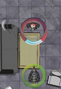
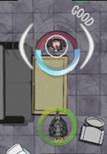
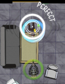
Key Feature : Bullets Blocking
All weapons are equipped with Kinetic Shield, which captures bullets fired at player and holds for a short amount of time. When a bullet is captured by the shield, players need to react to it by finishing a quick time event to avoid damage. The size of shields, capture force and recharge rate may very base on the weapon equipped.
Game Flow
In conclusive, Timely Shot is a 2D top-down rhythm shooter game. Player can deal higher damage by shooting in sync with the rhythm, while also paying attention to block incoming bullets. Perfectly matching the rhythm will boost the player's damage, allowing them to finish enemies faster.
Player will start each game with limited health and backup ammunitions. Health can be restored by picking up HP pack, and ammunitions can be restored by picking up Ammo pack. Enemy will drop both HP pack and Ammo Pack when eliminated, these packs can also be found by looting the environment.
Player may fight the way through and complete the main objective of the level by eliminating enemies, reaching certain destinations, collecting Evidences. Completting any side objectives grants player extra awards when a level is finished.
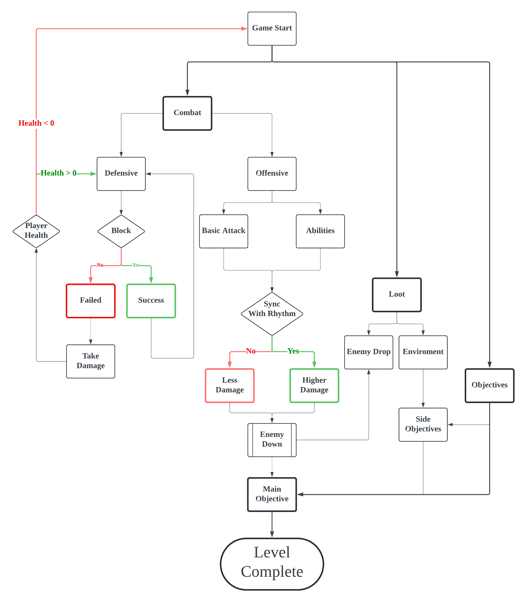
Story & Level
World Setting
J was born in Central America in 2027, where gangs ruled and the government did little. After his parents were killed, he was raised by a mysterious gang. As an adult, he worked as a DJ while doing hitman jobs for the gang. In year of 2052, J met and married W, daughter of the gang`s leader. 2 years later W was shot and died on their wedding anniversary night, J couldn’t cope and disappeared.
Three years later, 2057, old friends Z, the driver, and S, the hacker, found J when J was a total mess. They come with clues of the murderer, persuade J to join them to hunt down the person responsible for W`s death. And their first step is to rescue K, the arsenal keeper, from a heavy guarded mansion...
Story Translation to Designs
Title: The two most unforgettable moments in J`s life: parents got murdered and wife got murdered. These two events happened both cause by timely shots from the mysterious murderer. Here the title Timely Shot is not only referring directly to that each shot player fired can deal higher damage by perfect timing, but also the shot as chance and opportunity to block the bullet in time.
Technologies: The main storyline is set thirty years in the future—a time that’s not too distant but allows for technological advancements. This gives us the opportunity to try some unconventional designs while retaining traditional elements, such as energy-infused bullets and health crystals for restoring vitality. Guns that fire energy rounds yet still maintain traditional structures, and sound, reflecting a partially developed technology in this chaotic, gang-dominated Central America in the world setting.
Rhythm: J raised in a gang, and his years of experience as a hitman have made him the “unbeatable protagonist” of Timely Shot. His side gig as a DJ adds a musical dimension, explaining why he relies on music during missions. When J is fully focused, his shooting aligns with the rhythm in his ears, and directly hitting enemy weak points.
Operation Base(WIP): Z, S, and K, the driver, the hacker and the arsenal keeper, they worked closely with J in the past and they will move as one team in the future. While game is loading or player is hanging around in operation base, they might start conversation with them to find information related to weapons, gears, abilities, and reviews of past stories. While J is in field, which means player is in game, he will receive information, hints and instruction from Z, S and K.
Level Design - Mansion Rescue
Mansion Rescue is the first level of chapter1 right after Z and S picked J up. It is designed as a tutorial level, and a combination of 3 sections: Second floor, the Raid; Ground Floor, the Siege; and basement, the Boss. Player will be introduced to basic movement, combat, and interaction with environment Step by step.
When player first enter the level, a cut scene will tell the reason why the player was asked to be part of the mission, and a mission brief: enter the mansion from the balcony at the second floor, clear all the enemies and find a way to go down to first floor; lure the enemy with key out, retrieve the key and activate the center elevator to go down to basement and rescue the former teammate.
Player will encounter the DMG Turret in the basement right before where K was kept hostage. Player needs to destroy the turret and retrieve the key to unlock the cell.
Level Legend
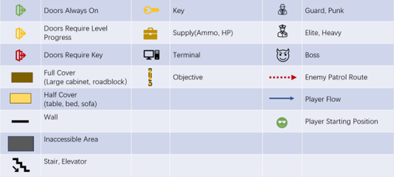
Mansion Rescue-2nd Floor, Game Mode: Raid
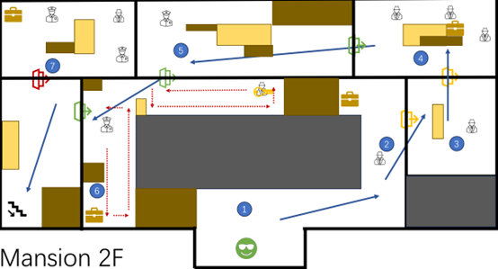
Player enters the mansion from the balcony on the second floor. One side of the hallway is blocked by boxes.
Mansion Rescue 1st Floor, Part 1, Game Mode: Siege
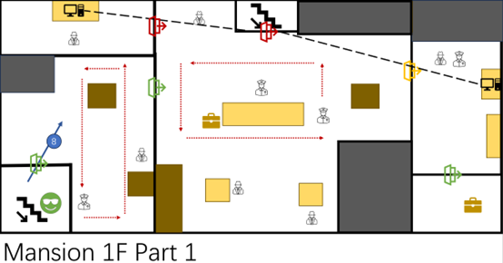
After eliminated all enemies on second floor, player comes down to first floor by the stairs. The lobby at first floor is basically an open space.
Mansion Rescue 1st Floor, Part 2, Game Mode: Siege
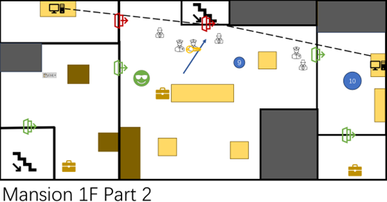
Another squad of enemies will take the center elevator to first floor as soon as all enemy on the first floor is eliminated. Another two enemies will open the door to control room and enter the lobby.
Mansion Rescue-Basement-Game Mode: Boss
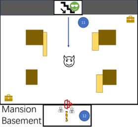
Player enters the basement and encounters the boss, Dual Machine Gun Turret. Teammate will inform player that the weak spot is where the ammunition stored for each machine gun. Player picks up the key and open the cell. Level 1-1 “Mansion Rescue” ends.
Mansion Rescue-Level playthrough
HUD & UI
Crosshair
Unlike most First Person or Third Person Shooter game, that the crosshair is always in the middle of your screen, top-down shooter game takes you time to find where your crosshair is if it is too small. And it gets more challenging in Timely Shot: while players need to aim at enemies, they also need to pay attention to the rhythm if they want to deal higher damage.
Thus, the core idea of designing the crosshair for Timely Shot can be summarized to one word, CLEAR.
First thing first the aim sight should be clear, which means it can`t be too large which will block your screen, and can`t be too fancy cause it will distract you from aiming; secondly the rhythm indication should be clear, based on the size or color, player should be able to tell if it is a good or bad timing at the moment; and lastly, feedback of the shoot should be clear. Was that a good hit or perfect hit? Did I hit the enemy? Can I shoot through this? In addition to better recognize the rhythm visually, when it is not perfectly on the beat, the highlighted parts are not a complete whole circle, and not as bright as the perfect circle.
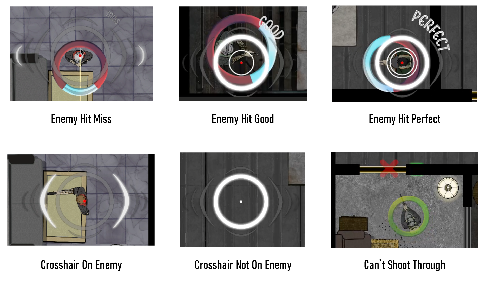
Other HUD
Player spends most time focusing on the area around the crosshair during the gameplay of Timely Shot, thus other information might be ignored, for instance: current magazine load. It is not that important cause you know you need to change magazine when you find yourself can`t shoot, but the logic shouldn`t be like this. It should be: you know you can`t shoot when magazine is empty so you change your magazine after you fire the last bullet.
In order not to overwhelm the crosshair and remind player the remaining of current magazine CLEARLY, highlighted bullets, compared to the dark magazines and environment, can be easily spotted with peripheral vision. If there is no yellow or red in the lower right corner of your screen, then the next move will be reloading instead of shooting.
menu
In order not to overwhelm the crosshair and remind player the remaining of current magazine CLEARLY, highlighted bullets, compared to the dark magazines and environment, can be easily spotted with peripheral vision. If there is no yellow or red in the lower right corner of your screen, then the next move will be reloading instead of shooting.
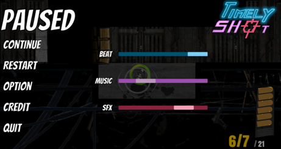
Future Plan
Timely Shot was designed as a fast-paced, arcade-style game featuring a 3-hour main storyline. Players can unlock new abilities and upgrades as the story progresses. Each section of a level is designed to last between 1 to 3 minutes, with a full level taking approximately 10 minutes to complete and under 5 minutes if speedrun the level. It will also includes a hardcore replay mode and an online ranking leaderboard.